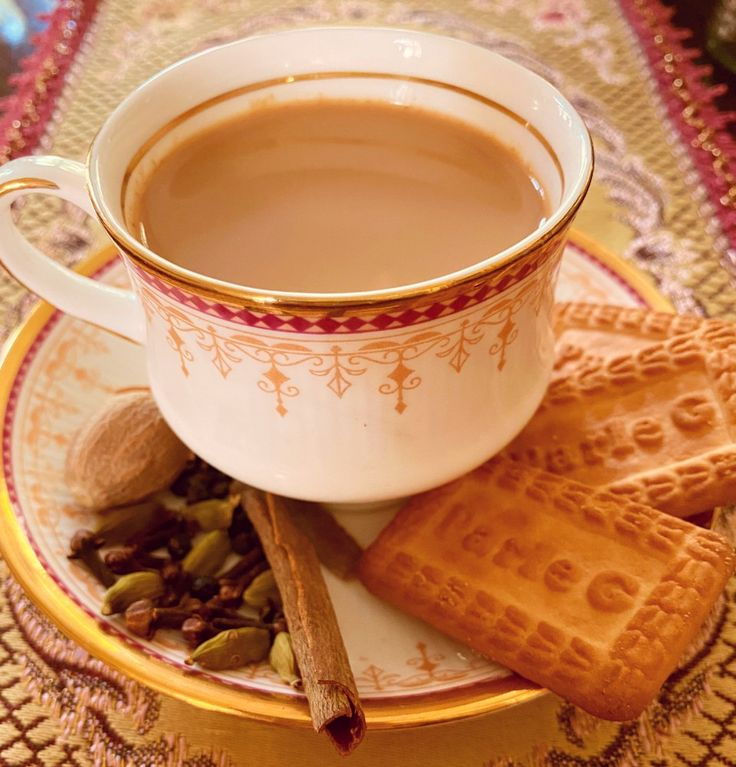

TEA

Ingredients
- Milk
- Tea powder
- Sugar
- Grated ginger
- Elachi
- Cloves
- Mint leaves
- Tulsi leaves
Directions
- In a pan, add 2 tablespoon of sugar and let it caramalise it.
- Then add half a cup of water and let it boil for 3 boils
- Then add 2 tablespoon of tea leaves and watch the color changing
- When the colour changes to reddish sort of add all the powders mentioned and let it boil
- When water is half, add Milk in to pan
- let the tea boil for 9-10 boils
- Strain into the cup through a strainer
- Enjoy
you can find my other receipes at Khushi's Kitchen Creations